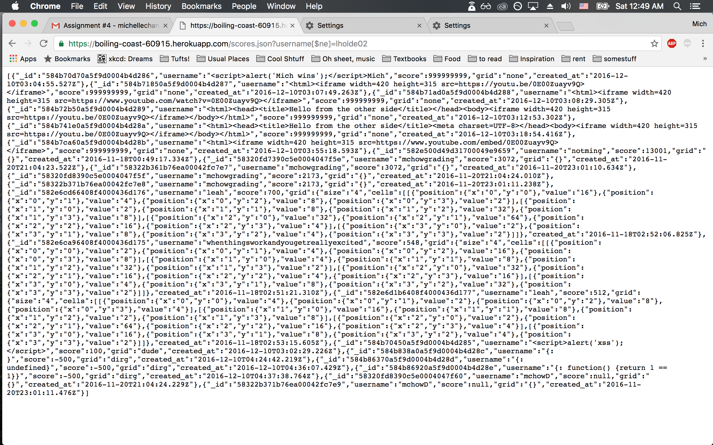

Introduction of Security and Privacy Assessment
The product is a leaderboard for the game 2048 hosted at
https://boiling-coast-60915.herokuapp.com. The username, score, and
time/date the game was played are listed in order of descending score. This
security assessment tests for vulnerabilities to attacks. The three route
paths to test in particular are '/' and '/scores.json' requested using GET,
as well as '/submit.json' requested using POST.
Methodology
First, I tried "black box" testing. Then, I looked at the code to target
specific vulnerabilities I saw.
Tools and methodologies I used include query strings, curl, and Burp Suite.
Abstract of Findings
One of the most severe, but easy to execute attacks in this product is
cross-site scripting. The username, score, and grid inputs are not sanitized.
Another vulnerability is database injection. In this case, it is possible to
get all the records, even though one might not have access to all the user
data.
Throughout the code, "null" is incorrectly used instead of "undefined" when
checking variables, which is a vulnerability that gives an easy window for
crashing the application if an undefined variable is accessed.
Issues Found
Issue 1: Cross-site scripting (XSS)
- Location: Mainly in the POST request /submit.json,
getting the request body.
- Severity: High. The product is a leaderboard, but XSS can ruin the
layout of the entire site by embedding anything that HTML allows,
include fake scores and grids, and prevent access
to the site through pop-ups. The least harm is annoyance, the most
harm is ruining the purpose of the product.
- Description: The problem was found using curl. I wrote HTML to embed
the video of Pen-Pineapple-Apple-Pen from Youtube as my username.
- Proof: Screenshot of '/'.

- Resolution:
The issue can be solved by sanitizing the input. Remove angle brackets
to prevent script tags. Although it can be pretty simple to replace the
special characters, it may be a better idea to sanitize with a library
that can sanitize the code more thoroughly.
Issue 2: Database Injection
- Location: '/scores.json'. The injection happens when the username is
searched for in the database.
- Severity: The severity is medium. All the scores for all users
can be returned, meaning anybody can access the entire database. However,
the program does not have very sensitive information. A score and date is
not too important. The username could be searched elsewhere on the web, but
also does not seem to pose much of a risk to be accessed.
- Description: The vulnerability was found by directly entering in
a query string for the username. An example: '/scores.json?username[$ne]='
with the query left blank or with a string.
- Proof: Screenshot

Resolution: The issue can be resolved by sanitizing the input so
that the input cannot have query operators.
Issue 3: Lack of Encryption
- Location: '/submit.json'.
- Severity: Low. The severity is low because the data is not too
important in this case.
- Description: The grid is not information that the client has access
to. A good extra step to take to prevent people from accessing the
grid is to encrypt it before putting it in the database. For instance,
this may be good to protect against proxies or unknown attacks because
encrpyted data, even after stolen, would still need to be decrypted to be
useful.
- Proof: The lack of encryption is the proof.
- Resolution: MongoDB has encryption methods to encrypt the database,
either in-flight or at-rest.
Conclusion
It is important for the layout of the product to be preserved.
The majority of the issues can be fixed by sanitizing user input
because the input could be anything, whether nonsensical and/or
malicious. To prevent access to too much data, preventing injections
in the database and encryption are useful. The costs of better code
is very little.